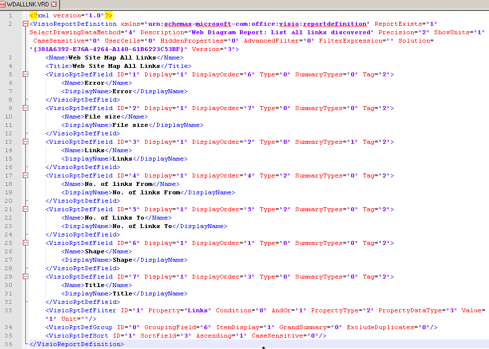

Может быть вы обращали внимание, что многие расширения Visio сопровождаются примерами отчетов, сделанных специально под эти расширения. Более двух десятков отчетов. И это неспроста. Отчет является эффективным средством для сбора информации из готового документа Visio. Практически не затрачивая дополнительных усилий, вы можете сформировать файл Excel или XML, содержащий выбранные данные. При этом доступны такие функции как отбор нужных шейпов, сортировка, группировка и консолидация данных. А так как определение отчета можно сохранять для последующего использования, можно заранее подготовить набор типовых отчетов, которые будут использоваться в вашей деятельности.
Я не буду повторять самой элементарщины. Простейшие действия, выполняемые при подготовке отчета, показаны, например, в блоге TechNet.
Назначение полей на форме формирователя отчетов хорошо представлено в справке. Для ее получения достаточно нажать знак "?" на форме.
Рассмотрим более интересные вещи. Инструментом является штатный аддон "VisRpt", который поставляется со всеми версиями Visio. Результат подготовки (определение отчета) может быть сохранен непосредственно в файле документа или выгружен в файл .vrd (visio report definition).
На вопрос, чем открыть файл .vrd, интернет чаще всего отвечает - только в Visio. Не верьте! Формат файла основан на XML, поэтому открыть его можно в любом текстовом редакторе. Однако для удобства просмотра я бы рекомендовал Notepad++ с плагином XML tools, который с помощью функции Pretty print покажет этот файл в удобном для чтения виде.
Примерно вот так:
Формат файла определения отчета не менялся как минимум с Visio 2007 до Visio 2013, а скорее всего и даже больше. Так что его можно считать независимым от версии Visio.
Несколько слов о секциях отчета можно найти в статье Visio’s other file format – Report Definition files *.VRD. John Marshall поясняет в ней назначение секций. Хотя, это и так видно при просмотре текста определения отчета.
Естественно, файл можно открыть и в Visio, в формирователе отчетов. Но там все содержимое будет разнесено на несколько страниц и множество полей формы. Для изменения это может быть удобно, а для просмотра и документирования, пожалуй, текстовое представление будет более удобным.
Выполнение отчета
Простейший вариант - нажать на кнопку Run непосредственно в формирователе отчетов, как рекомендуется в справке. Однако это не единственный способ.
Формирователь отчетов может быть вызван с помощью VBA или из другой программы. Примеры такого вызова:
- Application.Addons("VisRpt").Run ("/rptDefName=Coordinates /rptOutput=Excel_Shape")
- Application.Addons("VisRpt").Run ("/rptDefName=G:\Temp\Coordinates.vrd /rptrptSilent=True /rptOutputFilename=G:\Temp\coordinates.xlsx /rptOutput=Excel")
К сожалению, возможность программного обращения толком не документирована. Поэтому информация о ключах и допустимых значениях будет несколько неполной:
/rptDefName - имя отчета, присвоенное в формирователе отчетов, или полное имя внешнего файла определения отчета.
/rptOutput - форма представления результата. Допустимые значения:
- HTML - результат в формате HTML;
- EXCEL_SHAPE - результат выводится в шейпе, непосредственно в документе Visio;
- XML - результат в файле XML;
- EXCEL - результат в файле Excel.
/rptOutputFilename - (не обязательный) имя выходного файла (включая путь). Используется в тех случаях, когда в качестве выходного формата заданы HTML, XML или Excel.
/rptSilent - (не обязательный) указание на то, что не нужно показывать формирователь отчетов.
Кстати, "пустое" обращение Visio.Application.Addons("VisRpt").Run (" ") приводит к открытию формы формирователя отчетов без дальнейших действий Отчет не формируется, форма ожидает выбора или формирования нового отчета. Если указан вывод данных в шейп, формирователь не открывается. А при выводе в файл формирователь по умолчанию открывается и предотвратить это можно только использованием ключа /rptSilent.
Некоторые особенности
Особености формирователя отчетов могут потребовать соответствующей подготовки шейпов. То есть набор отчетов и трафареты с мастер-шейпами должны готовиться комплексно. В частности фильтрация может использовать логическое "И", но нет возможности "ИЛИ". Значит при наличии в документе множества разнообразных шейпов нужно озаботиться тем, чтобы нужные шейпы были помечены каким-либо общим признаком. Например, специальное значение в User ячейке или определенный класс шейпа. На этот предмет полезно проанализировать указанные выше примеры определения "штатных" отчетов. Найти отчеты можно поиском по шаблону *.vrd в папке установки Microsoft Office.
Если вы рассчитываете на использование отчетов, то не рекомендуется целевые шейпы загонять в группы. Аддон не лезет в иерархию и обрабатывает только шейпы верхнего уровня.
Ну е если возможностей формирователя отчетов не хватает, то следует рассмотреть технологию экспорта данных (например, в Excel) или разработать свою программку экспорта. Сделать немного подольше, чем работа с отчетами, но не сильно. Зато и возможности своей программы ограничиваются только фантазией.
Перечень готовых отчетов (в Visio 2007)
| ASSET.VRD | Space Plan: Belongs to, Asset Type, Name, Manufacturer |
| CALEVENT.VRD | Calendar Event report: Start date, Start time, End date, End time, Subject, Location, Label |
| DOORSCHD.VRD | Building Plan: Door Number, Size, Type, Thickness |
| EQPLIST.VRD | Process Engineering equipment components: Tag, Description, Material, Manufacturer, Model |
| FLOCH.VRD | Flowchart report: Displayed Text, Resources, Cost, Duration -grouped by Master Name |
| GANTT.VRD | Gantt Chart report: Name, Start Date, End Date, Duration, User-defined Number, Percent Complete -grouped by Resource |
| HVACDIFF.VRD | HVAC: Diffuser shape, Diffuser width, Diffuser depth, Flow rate, Neck diameter, Air flow type |
| HVACDUCT.VRD | HVAC: Master name, Duct length, Duct width |
| INSTLIST.VRD | Process Engineering instrumentation components: Tag, Description, Connection Size, Service, Manufacturer, Model |
| INVENTRY.VRD | Number of shapes on page, grouped by shape name. |
| MOVE.VRD | Space Plan: List where people are located |
| NENWORK1.VRD | Networked device list: Shape text, Net Name, IP Address, Sub Net Mask, Mac address, Net description |
| NENWORK2.VRD | Network PC Report: Shape text, Network name, Network description, Operating system, Memory, CPU, Hard drive capacity |
| NENWORK3.VRD | Network Equipment report: Building, Room, Shape text, Network name, Network description, IP address, Manufacturer, Product description, Product number, Part number, Serial number, Asset Number |
| ORGCH.VRD | Name, Title, Number of direct reports, Telephone -grouped by Department |
| ORGPOS.VRD | Organization Chart: Count similar Titles |
| PIPELINE.VRD | Process Engineering pipeline components: Tag, Description, Line Size, Schedule, Design Pressure, Design Temperature |
| SPACE.VRD | Space Plan: Department, Room Number, Use, Area |
| VALVE.VRD | Process Engineering valve components: Tag, Description, Line Size, Valve Class, Manufacturer, Model |
| WDALLLINK.VRD | Web Diagram Report: List all links discovered |
| WDERRLINK.VRD | Web Diagram Report: List all discovered links that contain errors |
| WINSCHD.VRD | Building Plan: Window Number, Size, Type |